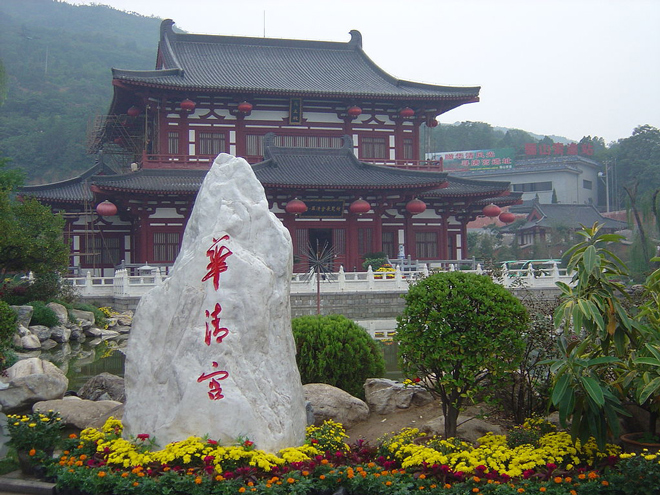
.
30km east of Xi'an is the Huaqing Pool which, during the Tang Dynasty, was a retreat of emperors who came here to relax with their concubines. Water from hot springs is funnelled into public bathhouses that now have 60 pools accommodating 400 people.
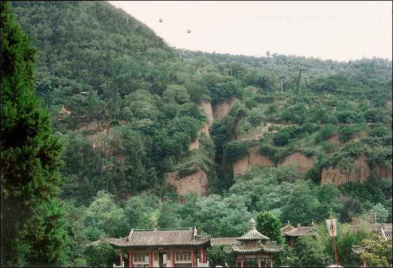
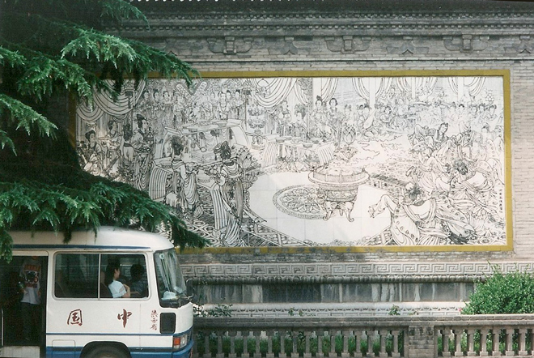
Yang Guifei was presumably one of the emperor's favoured concubines. Here is a statue of her "coming out of her pool" although, to my mind, she looks a bit like Barbara Windsor in a Carry On film ...
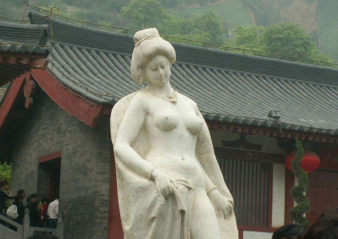
The gardens were very attractive and a restful place to sit away from the baking hot sun.
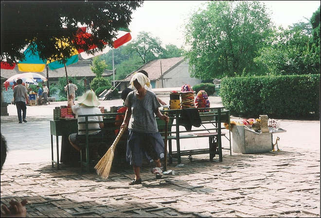
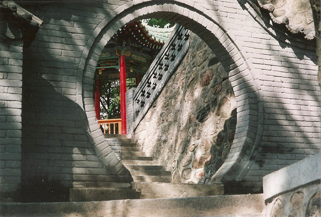
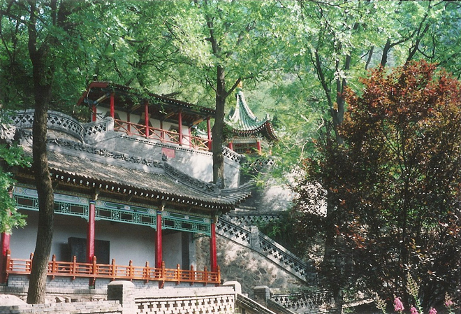
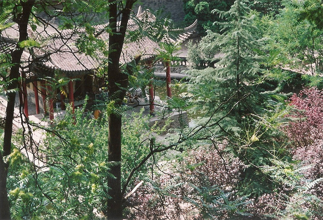
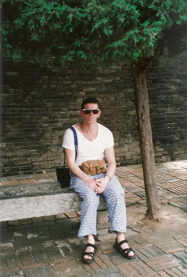
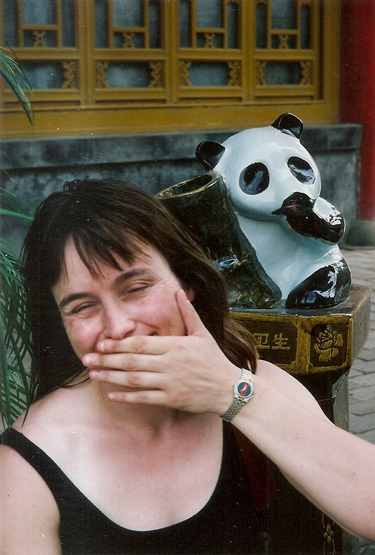
Next, a visit to the Memorial Museum of the Eighth Route Army. In the 1930s, when the Japanese were attacking China, the Communist Party and Nationalist Party vied for control of China. In October 1936, Chiang Kai Shek flew to Xi'an from Nanjing but was imprisoned by the Communist Party. However, in December 1936, he signed an agreement to co-operate with the Communists instead of trying to fight against them.
Once again, a golden dressing-up opportunity ...
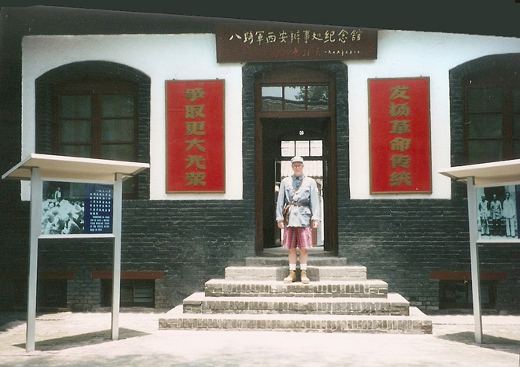
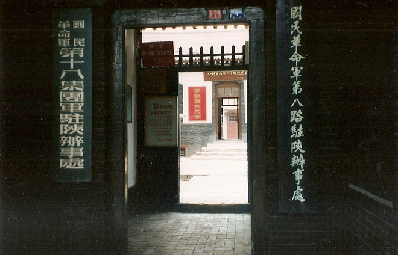
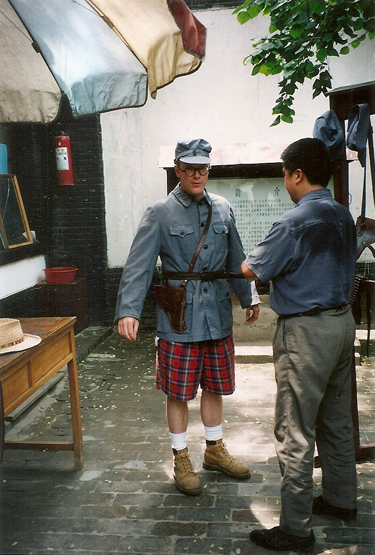
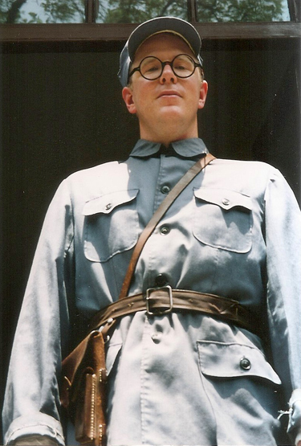
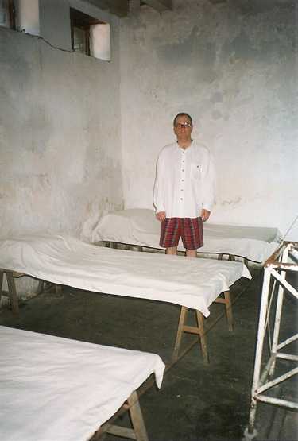
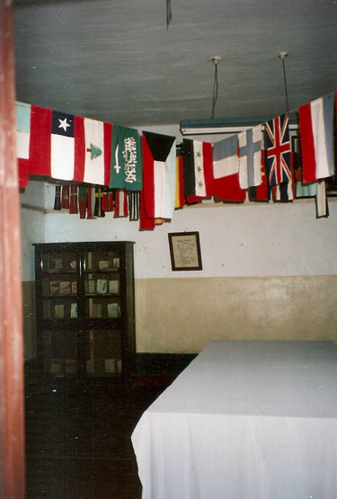
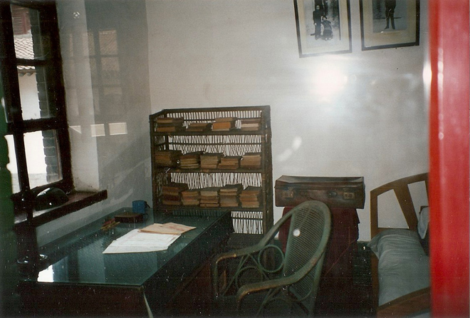
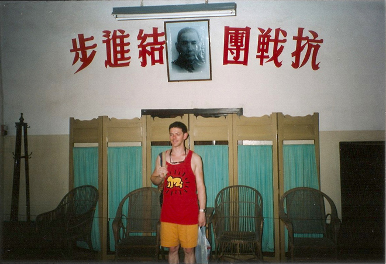
For our final night in Xi'an we ventured out to try Muslim-Chinese cuisine / street food. We sampled shuànguozi, a delicious local hotpot made by dipping uncooked meat and vegetables (on skewers) into a chafing dish full of boiling stock. While eating we were entertained by the stall-owner's scantily-clad and filthy child.
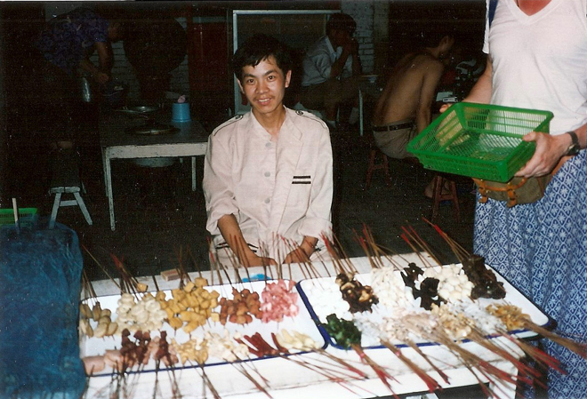
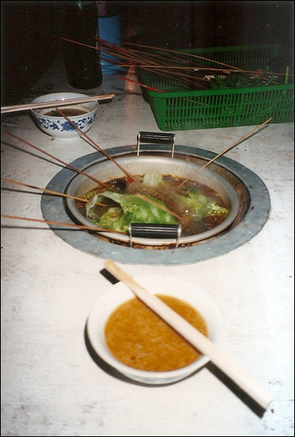
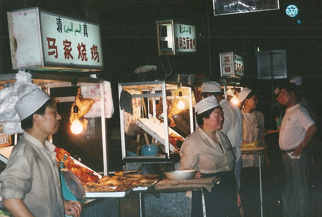
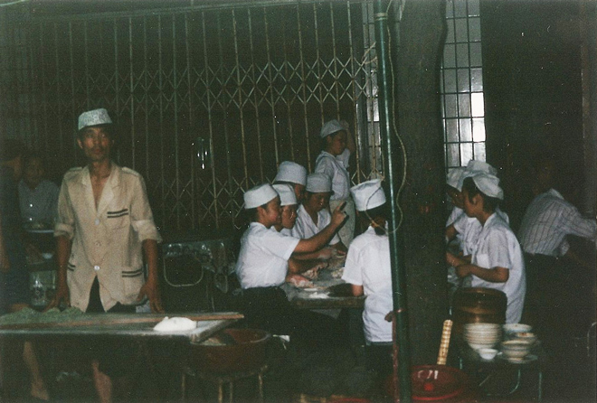

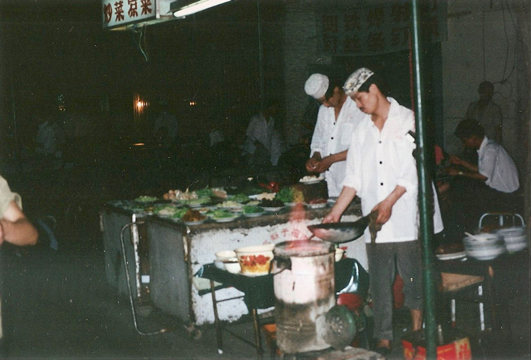